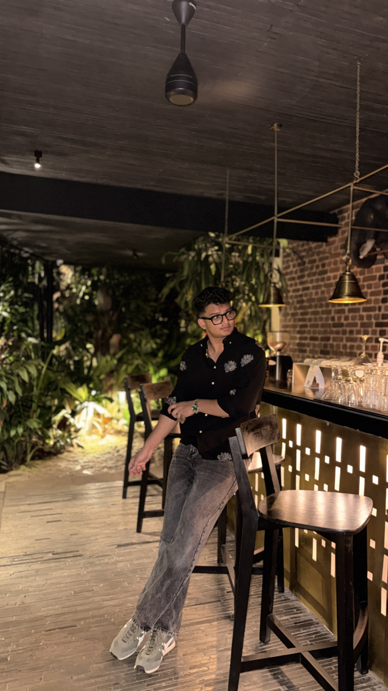

M.S. Computing & Information Systems candidate and Software Developer who works comfortably across software development, AI/ML, and data analysis. Currently focused on building deep learning models for image segmentation and developing Python-based desktop applications with SQL integration. Always passionate about learning new technologies and tackling complex challenges..

Python, C++, JavaScript, SQL
HTML, CSS, Responsive Web Design, CRUD Operations
Database Design, Entity-Relationship Modeling
Data Cleaning, Exploratory Data Analysis (EDA), Statistical Testing (Chi-Square), Data Visualization
AI-Assisted Data Analysis, Gradio
Event Videography, Video Editing, Highlight-Reel Production, Photography, Social Content Creation
Live-event coverage and edit for Youngstown State's Penguin Productions, cut for social and promotional release.
Trackside coverage and pit-crew footage cut into a vertical highlight reel for DTS Racing.
Self-shot and edited vertical feature, framed close on the bike with a passing helicopter adding motion to the background.
Clips above are compressed preview cuts of the original footage for fast loading; full-resolution masters available on request.